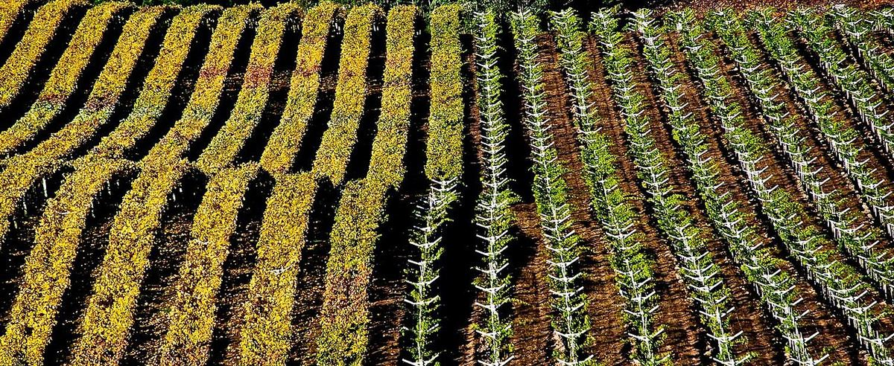

Brésil
Le Brésil produit du vin surtout dans l’État du Rio Grande do Sul, où la viticulture a été développée par des immigrants italiens. Il s’est fait connaître en particulier pour ses effervescents, frais et aromatiques, et possède aussi des zones singulières de viticulture tropicale.

Histoire
Les colons portugais introduisirent la vigne au Brésil au XVIe siècle et les jésuites la cultivèrent dans leurs missions du sud, mais pendant longtemps la viticulture eut peu d’importance. Le grand essor vint à partir de 1875, avec l’arrivée dans la région montagneuse de l’État du Rio Grande do Sul de milliers d’immigrants du nord de l’Italie, venus surtout de Vénétie et du Trentin. Dans les colonies qu’ils fondèrent, à l’origine de villes comme Bento Gonçalves, Caxias do Sul et Garibaldi, ils plantèrent des vignes et firent du vin selon leurs traditions. En raison de l’humidité du climat, ce sont surtout des variétés américaines comme l’isabel, plus résistantes aux maladies cryptogamiques, qui se répandirent.
Au XXe siècle se formèrent de grandes coopératives et, à partir des années 1970, des entreprises étrangères s’installèrent dans la Serra Gaúcha, dont des filiales de groupes viticoles internationaux, qui contribuèrent à diffuser les cépages européens et des techniques modernes, surtout dans l’élaboration des effervescents. Depuis les années 1990, de nombreuses caves familiales d’origine italienne ont commencé à embouteiller des vins de Vitis vinifera avec une ambition qualitative. Aujourd’hui, cependant, une très grande part du raisin du pays provient encore de variétés américaines et hybrides, destinées au jus de raisin et aux vins de consommation courante.
Climat et sols
Le Brésil est un pays en majorité tropical, et sa viticulture s’adapte à des conditions très différentes. Dans la Serra Gaúcha, principale région, le climat est tempéré et humide, avec des pluies abondantes même pendant la maturation, ce qui impose une conduite attentive du vignoble et favorise des vins au degré modéré et à la bonne acidité, très adaptés aux effervescents. Les sols sont d’origine basaltique, souvent argileux. Plus au sud, la Campanha Gaúcha, à la frontière uruguayenne, est plus sèche et plus plate et produit des rouges plus mûrs. Dans l’État de Santa Catarina, les zones d’altitude du plateau catarinense offrent un climat frais. Dans la vallée du fleuve São Francisco, dans le Nordeste semi-aride, on pratique une viticulture tropicale irriguée où, en l’absence d’hiver, il est possible d’obtenir plus d’une récolte par an.
Régions
Le Rio Grande do Sul concentre l’essentiel de la production de vin. La Serra Gaúcha abrite le Vale dos Vinhedos, première indication géographique reconnue dans le pays, et d’autres zones comme Pinto Bandeira, Farroupilha et Altos Montes. Outre la Campanha Gaúcha et la Serra do Sudeste, dans le Rio Grande do Sul, la carte est complétée par le plateau de Santa Catarina, la vallée du São Francisco, entre le Pernambouc et Bahia, et, plus récemment, des zones des États de Minas Gerais et de São Paulo où l’on modifie le cycle de la vigne par une double taille afin de vendanger pendant la saison sèche de l’hiver.
Styles et cépages
Les effervescents sont le style le plus reconnu du vin brésilien. Ils sont élaborés aussi bien selon la méthode traditionnelle, avec seconde fermentation en bouteille, qu’en cuve close, à partir de chardonnay, de pinot noir et de riesling itálico, et il existe aussi une tradition propre d’effervescents doux et aromatiques de muscat, associée surtout à Farroupilha. Parmi les rouges se distingue le merlot, bien adapté à la Serra Gaúcha, avec le cabernet-sauvignon, le cabernet franc, le tannat et le teroldego ; parmi les blancs, le chardonnay et le sauvignon blanc. Les variétés américaines comme l’isabel et le bordô restent essentielles pour le jus et le vin de table.
Réglementation
Le Brésil a mis en place un système d’indications géographiques à deux niveaux : l’Indicação de Procedência (IP), fondée sur la réputation d’une zone, et la Denominação de Origem (DO), aux règles plus strictes sur les cépages, les rendements et l’élaboration. Le Vale dos Vinhedos fut la première zone reconnue comme IP et obtint plus tard la DO, dans laquelle le merlot est le principal cépage rouge et le chardonnay le principal cépage blanc pour les effervescents.